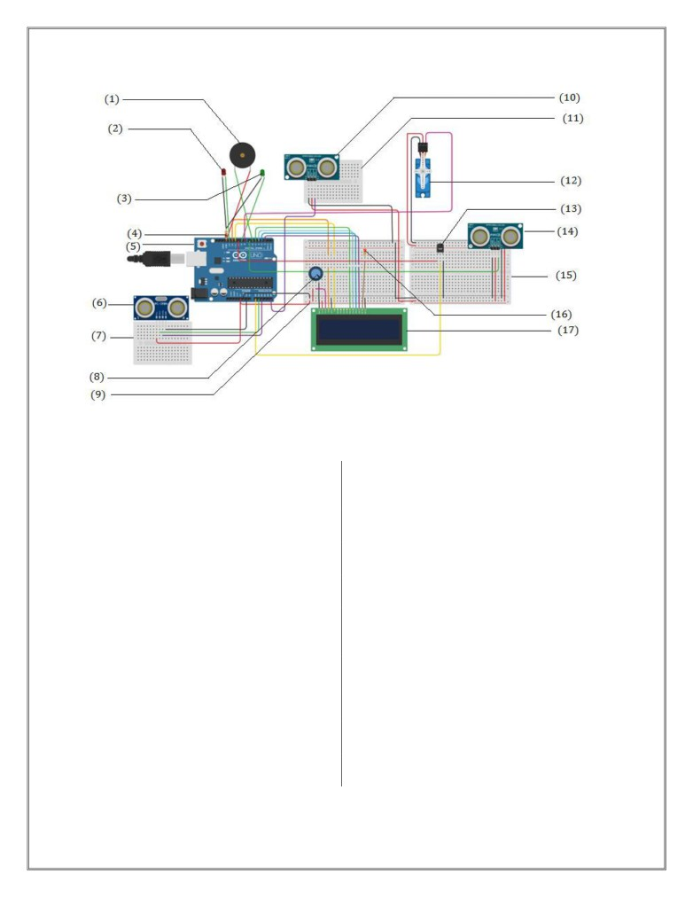

COVID-19 Automated Screening Machine
Project done by:
Name: Chirantan Ganguly
Contact Number: +91 9330192247
University: University of Calcutta
Course: Electronics and Communication Engineering
Semester: 3
Address: 41/4, Brindaban Mullick Lane, Kadamtala, Howrah - 711101.
1
Contents
Sl. No.
Topic
Page
1.
Problem Statement
3
2.
Covid19 Screening Machine
4-14
2.1
Abstract
4
2.2
Introduction
4
2.3
List of Components Required
5
2.4
Circuit Image
6-7
2.5
Working of the Device
8-9
2.6
Source Code
10-13
2.7
Innovative points about the Project
14
2.8
Links
14
2.9
Scope of Improvement
14
2
Project Objective
Aim:
To automate the temperature based screening task for COVID'19 screening.
Problem statement for the project:
To make a prototype simulation model (in TinkerCAD) of Temperature based
screening machine for COVID’19. This machine will be useful at entry gates where
manual screening is done by persons using digital thermometers. We have to automate
this particular task in a more effective way.
Features:
Detect and alert whenever a person is in between the range of 10cm to
20cm in front of the machine.
Measures his/her temperature
It should measure temperature only when someone is detected not all the
time.
If the temperature is normal then a buzzer & RED LED should be turned
on, to alert Gatekeeper.
If the temperature is normal, then it should turn on the GREEN LED.
It should spray sanitizer whenever hands are placed below a knob/a fixed
point
Display all relevant things over the LCD & Serial Monitor
simultaneously.
Count of the number of person currently inside should be maintained and
displayed properly.
3
COVID’19 Screening Machine
2.1 Abstract
Through this project, we want to automate the task of sanitization and thermal
screening done before entering a public place (due to COVID’19), thereby reducing
human-to-human interaction and thus helping to reduce the chance of the spread of the
infection. We will be using an Arduino Uno Microcontroller (ATmega 328P), and
some other sensors and actuators to achieve this objective of ours. All the components
used are inexpensive, making this device very affordable, and easily deployable at all
scale from small businesses to larger public places such as malls/airports. Through
this report we provide a prototype (simulation model - using TinkerCAD) of this
device.
2.2 Introduction
COVID’19 has caused, and is causing a lot of havoc all around the globe. Its highly
communicable nature has exposed everyone to the risk of getting infected. We already
have lost a lot of precious lives to this disease, and we should not expose any more
human beings to this infection (or reduce their risk of infection as much as possible).
Thermal scanning and basic sanitization has now become a norm before entering any
public place (restaurant/malls/airports/schools), and this task is done mostly by
humans, where they provide the approaching person with some amount of sanitizer
and check their temperature before allowing entry. This exposes them to a high chance
of infection, as they have to deal with a lot of people constantly.
It is thus of interest to us to automate this task and to prevent humans from risking
their lives while doing these things.
Here we provide the prototype of the device which could be easily manufactured with
simple and inexpensive components, would be easily transportable and a reliable
device at all scale. The device is also easily personalisable according to the need of the
customer.
4
2.3 List of Components Required:
Name
Quantity
Component
UAUno1
1
Arduino Uno R3
ULCD
1
LCD 16x2
RPot1
1
250k Ω Potentiometer
R1
1
220Ω Resistor
R2
1
1k Ω Resistor
PINGSanitiseDistanceSensor
2
Ultrasonic Distance Sensor (3 pin)
PINGEntryDistanceSensor
DISTExitDistanceSensor
1
Ultrasonic Distance Sensor (4 pin)
PEIZOBuzz
1
Piezo
UTempSensor
1
Temperature Sensor [TMP36]
DRLED
1
Red LED
DGLED
1
Green LED
SERVOSanitationServo
1
Positional Micro Servo
EntryUnit
2
Breadboard Small
DisplayUnit
SanitationUnit
2
Breadboard Mini
ExitUnit
Wire
Connecting wire
5
2.4 Circuit Image:
Figure 1: Image of the Circuit
Figure 2: Image of the Circuit with Units Labeled
6

Figure 3: Circuit Elements Labeled
(1) Piezo Buzzer
(10) Ultrasonic Distance Sensor (3 pin) - Sanitiser
End
(2) RED LED
(11) Breadboard Mini - Sanitation Unit
(3) GREEN LED
(12) Positional Servo Motor (Sanitiser Dispenser)
(4) Resistance (1k Ω)
(13) Temperature Sensor [TMP36]
(5) Arduino Uno R3
(14) Ultrasonic Distance Sensor (3 pin) - Entry
End
(6) Ultrasonic Distance Sensor (4 pin) - Exit End
(15)Breadboard Small - Entry Unit
(7) Breadboard Mini - Exit Unit
(16) Resistance (220Ω)
(8) Potentiometer
(17) LCD (16x2)
(9) Breadboard Small - Display Unit
7
2.5 Working of the Device:
The step by step functioning of the device is explained in this section, this will thus justify the
choice of the sensors/actuators made to help build this device.
The device would ideally be installed near the entrance of some
shop/restaurant/mall/school/airport. The first sensor which would be of use to us will be
Ultrasonic Distance Sensor - Entry End (14), this sensor will detect the location of person
in the vicinity of the entrance.
o
If no people is detected near the entrance, a default message is displayed on the LCD
screen (17) for example “--- Welcome! ---”, and also displays the total number of
people currently inside - “People in: count”.
o
If a person is detected in the vicinity of the entrance, two things might happen:
If the number of people inside is equal to the permissible limit (for example 20),
then on the LCD, we display a message like “No Space Inside”
If the number of people inside is less than the permissible limit, then we display the
message - “Kindly Sanitize” on the LCD screen.
No further proceeding is done until the sanitization is complete.
For the sanitization to be done, one has to take his/her/their hand near the sanitation
unit, where their hand is detected with the help of - Ultrasonic Distance Sensor -
Sanitizer End (10). Once a hand is detected, a small amount of sanitizer is
dispensed out to the hands with the help of a Positional Servo Motor (12).
Once sanitation is complete, only then temperature screening is done, with the help
of Temperature Sensor [TMP36] (13). Temperature is displayed on the LCD as
“Your Temp: temp F” There are two possibilities following this.
If Temperature < 99º F - Person doesn’t have fever, and should be allowed
entry. LCD displays: “You may enter :)”. Green LED is turned on, and the
person may walk through. The count of the person inside is increased by 1.
If Temperature >= 99º F - Person has fever, and should not be allowed entry,
LCD displays “FEVER Step Aside”, the Red LED is turned on, and the Buzzer
goes on to alert the Gatekeeper, and also to make people nearby aware that they
should keep safe distance.
The device also has a third Ultrasonic Distance Sensor - Exit End (6), when any person
approaches the exit gate, it reduces the count of the number of people currently in by
1(unless people in is 0)
Flowchart is given on the following page, link for a better quality image of flowchart (here).
8
2.6 Source Code:
#include <LiquidCrystal.h>
#include <Servo.h>
int cm=0,inchOut=0,s_distance=0; //initializing distance variables
Servo myservo; //object for servo
int pos = 0; //stores the position of the servo
//method to read data of ultrasonic distance sensors
long readUltrasonicDistance(int triggerPin, int echoPin)
{
pinMode(triggerPin, OUTPUT);
// Clear the trigger
digitalWrite(triggerPin, LOW);
delayMicroseconds(2);
// Sets the trigger pin to HIGH state for 10 microseconds
digitalWrite(triggerPin, HIGH);
delayMicroseconds(10);
digitalWrite(triggerPin, LOW);
pinMode(echoPin, INPUT);
// Reads the echo pin, and returns the sound wave travel time in
microseconds
return pulseIn(echoPin, HIGH);
}
LiquidCrystal lcd(12, 11, 5, 4, 3, 2);
//set up function
void setup() {
lcd.begin(16, 2);
//Initializing LCD interface, and specifies the dimension
pinMode(10, OUTPUT); //Digital signal for [TMP36], so that it
//isn’t on always
pinMode(13, OUTPUT); //OUTPUT digital signal for Red LED
myservo.attach(8);
//attaching the servo with Digital pin 8
myservo.write(0);
//initially the servo is at 0 degree angle
pinMode(9, OUTPUT);
//OUTPUT digital signal for Green LED
pinMode(A0, INPUT);
//INPUT signal from [TMP36]
Serial.begin(9600);
//setting baud rate for serial data comm.
}
int count=0,flag=0,sanitise=0;
//loop function
void loop() {
digitalWrite(9, LOW); //green led dimmed
digitalWrite(13, LOW); //red led dimmed
cm = 0.01723 * readUltrasonicDistance(7, 7); //distance of a
person from entry gate
s_distance = 0.01723 * readUltrasonicDistance(A5, A5); //distance
of hand from sanitiser machine
inchOut = 0.01723 * readUltrasonicDistance(A1, A2)/2.54;
//distance of a person from exit gate
10
lcd.setCursor(0,0);
//default print when no one is near
if(cm>15){
lcd.print(" ---Welcome!--- "); //Welcome message
delay(2000);
lcd.setCursor(0,0);
lcd.print("No Mask No Entry"); //Masks must for entry
flag=0;
}
//When there is more than 20 people inside, print "No Space
//Inside" and do not allow anyone in to maintain social distancing
if(count>=20 && cm<=15){
Serial.print("NO SPACE INSIDE");
lcd.print("No Space Inside "); //Print “No Space Inside”
flag=0;
}
//The person must sanitize before proceeding any further once he
//is detected
if(cm<=15 && count < 20 && sanitise==0){
Serial.print("Person Detected |");//Printing in Serial Monitor
lcd.setCursor(0,0);
lcd.print("Kindly Sanitize
"); //Instruction to sanitise
//sanitize once the hand is <=10cm from the sanitiser
//Moving servo to complete sanitation
if(s_distance<=10){
myservo.write(45);
delay(100);
myservo.write(90);
delay(100);
myservo.write(135);
delay(100);
myservo.write(180);
delay(100);
myservo.write(0);
delay(2000);
sanitise=1;
//Sanitation status set to 1(done)
}
Serial.print("Sanitised :"); //Printing sanitation status
Serial.print(sanitise);
//On serial monitor
}
//Measure Temperature once sanitised
if(cm<=15 && count < 20 && sanitise==1){
count++;
if(flag==0){
digitalWrite(9, LOW);
11
digitalWrite(13, LOW);
lcd.setCursor(0,0);
lcd.print("Covid Screening
"); //Screening Begins
delay(800);
lcd.setCursor(0,0);
lcd.print("Cooperate Pls "); //Requesting Coorperation
delay(800);
lcd.setCursor(0,0);
lcd.print("Checking Temp.
");
delay(2500);
}
//Temperature checking begins
flag=1;
digitalWrite(10, HIGH);//digital pin high only after sanitation
//temperature is not measured always
int reading = analogRead(A0);
float voltage = (reading/ 1024.0) * 5000.0;
float temp = (voltage) / 10 ;
temp =temp+ (-50);
temp=1.8*temp+32; //Interpreting temperature in Fahrenheit
//if Temperature High, dont allow entry
if(temp>=99)
{
digitalWrite(13, HIGH); //red led on as temperature high
lcd.setCursor(0,0);
lcd.print("Your Temp:"); //Showing Temperature
lcd.print(temp);
lcd.print("F
");
count--;
delay(2000);
lcd.setCursor(0,0);
Serial.print("| High Temp!!! :"); //Serial printing info
Serial.print(temp);
lcd.print("FEVER Step Aside"); //instruct to step aside
//Play alarm to make people around aware and maintain
distance
for(int i=0;i<10;i++){
tone(6, 450, 100);
delay(250);
tone(6, 650, 100);
delay(250);
}
delay(1500);
digitalWrite(13, LOW);
flag=0;
}
12
//if temperature normal, allow entry
else{
digitalWrite(9, HIGH); //green led turned on
lcd.setCursor(0,0);
lcd.print("Your Temp:"); //showing temperature
lcd.print(temp);
lcd.print("F
");
Serial.print("| Normal Temp :"); //Serial printing info
Serial.print(temp);
delay(2000);
lcd.setCursor(0,0);
lcd.print("You may enter :)"); //Temp normal, person may
enter
delay(1500);
digitalWrite(9, LOW);
flag=0;
}
}
delay(2000);//2 second gap after a person has entered (Social
distancing)
digitalWrite(9, LOW);
digitalWrite(13, LOW);
//if person approaches exit gate, decrease count of people in
if(inchOut<=6){
if(count!=0){
count--; //decreasing count of people in by 1 as they exit
delay(2000);
}
}
//Display the number of people currently in
Serial.print("| count in :"); //serial printing count of ppl in
Serial.println(count);
sanitise=0;
lcd.setCursor(0, 1);
lcd.print("People in: "); //Display count of ppl in on LCD
lcd.print(count);
}
13
2.7 Innovative points about the Project: -
The count of the number of people in the shop/restaurant/mall is made dynamic with
the addition of just an additional Ultrasonic Distance Sensor at the Exit end, where the
number of people exiting the shop is reduced from the number of people currently
present inside the shop.
The entrance in the shop is stopped once the number of people inside the shop
exceeds the permitted limit, which is a necessity for social distancing. Once people
exit and the count is reduced, people can enter, otherwise they have to wait.
Appropriate cool down time is given to the machine after every screening process, so
that distancing is maintained in queue, because there would be no point whatsoever in
standing close to one another, as people won’t be able to use the machine before that
cool down time.
Sanitization is made compulsory for anyone before any further stages of screening.
Relaying cautionary message to wear mask. “No Mask No Entry”
2.8 Links:
Simulation Video Link:
2.9 Scope of Improvement:
[TMP36], the only temperature sensor available in TinkerCAD measures the
temperature of the ambient, so it will not be an accurate/appropriate sensor to use for
measuring body temperatures.
Door locking mechanism could be incorporated with the arduino for increased
functionality.
With the help of a camera, and a bit of Machine Learning application, a mask
detection algorithm night be set up to stop entry of anyone without a mask
IR sensor / PIR sensor maybe used instead of Ultrasonic distance sensor at the
sanitation unit
*This project was made as the final project for a 7 day online program on Arduino IDE organized by Ministry of Biotechnology Govt. of India in
association with Deen Dayal Upadhyaya College, University of Delhi
14